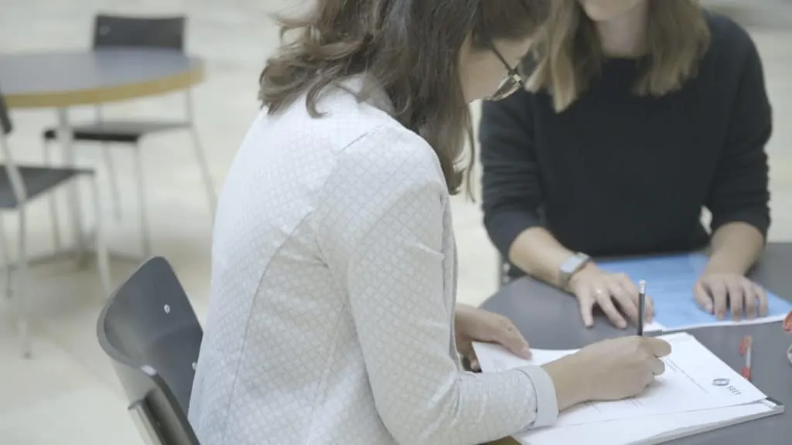

Mentoring und Migration – die Geschichte einer unserer Mentorinnen
Mentorship and Migration – A Profile on One of Our Mentors
Mentoring und Migration – die Geschichte einer unserer Mentorinnen
Das Jahr 2024 ist bereits in vollem Gange, und wir freuen uns, bekannt geben zu können, dass wir 32 Teilnehmer an unserem Mentorenprogramm haben – ein beeindruckender Anstieg von 78 % gegenüber dem Vorjahr!

Eine der wichtigsten Initiativen von SEET sieht vor, dass jedem Mentee ein:e Mentor:in zur Seite gestellt wird, der lösungsorientierte Unterstützung bietet und dem Mentee hilft, sich auf dem Weg zu einer Schweizer Hochschule zurechtzufinden und verschiedene Herausforderungen zu bewältigen. Auf diese Weise wollen wir den Mentees ein Gefühl der Stabilität und Zugehörigkeit vermitteln, sie bei der Integration in ihre neuen Gemeinschaften unterstützen, ihr Selbstvertrauen stärken und sie in die Lage versetzen, letztlich auf eigenen Füssen zu stehen.
Wie ihr euch vorstellen könnt, sind viele unserer Mentees mit Schwierigkeiten konfrontiert. Ihre Reise in die Schweiz war oft mit Unsicherheiten verbunden, da viele von ihnen aus ihrer Heimat vertrieben wurden. Nach ihrer Ankunft in einem neuen Land stehen sie vor der gewaltigen Herausforderung, sich in einer völlig anderen Kultur, Sprache und Gesellschaft zurechtzufinden. Aus diesem Grund ist unsere Aufgabe, ein integratives und unterstützendes Umfeld für ihre erfolgreiche Integration zu schaffen, von entscheidender Bedeutung.
Eine unserer engagierten Mentorinnen für die Kohorte 2024 ist Janna. Ursprünglich aus Deutschland, lebt und arbeitet Janna seit 13 Jahren in der Schweiz. Mit einem Master-Abschluss in Betriebswirtschaft begann sie ihre Karriere in der Wirtschaftsprüfung und Steuerberatung. Seitdem hat sie Führungsaufgaben in der Pharma- und MedTech-Branche in Basel übernommen. Sie lebt mit ihrem Mann und ihrem 5-jährigen Sohn in Basel-Landschaft.
Wie viele unserer Mentor:innen kam auch Janna zu SEET, nachdem sie einen Beitrag auf LinkedIn gesehen hatte. Jannas Motivation, sich zu engagieren, ergab sich aus ihrem Glauben an die transformative Kraft der Bildung und die Bedeutung, die sie für die Entwicklung jedes einzelnen Menschen haben kann, unabhängig von seiner Herkunft. Jannas wertvoller Einsatz und ihr Engagement stehen beispielhaft für das Herz und die Seele unseres Mentoring-Programms.
Während wir weiter wachsen und unsere Wirkung ausweiten, sind wir von der Widerstandsfähigkeit unserer Mentees und dem Engagement unserer Mentor:innen inspiriert. Gemeinsam hoffen wir, das Leben derjenigen, die einen Neuanfang und eine bessere Zukunft anstreben, grundlegend zu verändern.
Wenn ihr daran interessiert seid, in Zukunft Mentor:in zu werden, oder regelmässig über die Aktivitäten von SEET informiert werden möchten, meldet euch bitte für unseren Newsletter an!
2024 is already in full swing, and we are thrilled to announce we have 32 participants on our mentorship program, an impressive 78% increase on the previous year!
One of SEET’s key initiatives matches each mentee to a mentor who offers solution-oriented support, helping the mentee to navigate their way to a Swiss university and overcome various challenges. Through this, we aim to provide a sense of stability and belonging, assisting mentees in integrating into their new communities, increasing their confidence and empowering them to ultimately become self-sufficient.
As you can imagine, many of our mentees face difficulties and hardships. Their journey to Switzerland has often been filled with uncertainty as many are displaced from their homes. Upon arriving in a new country, they encounter the daunting challenge of acclimating to an entirely different culture, language and society. This makes our mission of providing an inclusive and supportive environment for their successful integration, of crucial importance.
One of our dedicated mentors for the 2024 cohort is Janna. Originally from Germany, Janna has been living and working in Switzerland for 13 years. With a master’s degree in business administration, she originally began her career in Audit and Tax Consulting. She has since transitioned to leadership roles in the Pharmaceutical and MedTech industry in Basel, and lives in Basel-Country with her husband and their 5-year-old son.
Like many of our mentors, Janna joined SEET after seeing a post on LinkedIn. Janna’s motivation to become involved stemmed from her belief in the transformative power of education and how important it can be in each individual person’s development, regardless of their origin. Janna’s invaluable dedication and commitment exemplify the heart and soul of our mentoring program.
As we continue to grow and expand our impact, we are inspired by the resilience of our mentees and the dedication of our mentors. Together, we hope to make a profound difference in the lives of those seeking a fresh start and a brighter future.
If you are interested in becoming a mentor in the future, or would like to receive regular updates on SEET’s activities, please sign-up for our newsletter!
Das Jahr 2024 ist bereits in vollem Gange, und wir freuen uns, bekannt geben zu können, dass wir 32 Teilnehmer an unserem Mentorenprogramm haben – ein beeindruckender Anstieg von 78 % gegenüber dem Vorjahr!
Eine der wichtigsten Initiativen von SEET sieht vor, dass jedem Mentee ein:e Mentor:in zur Seite gestellt wird, der lösungsorientierte Unterstützung bietet und dem Mentee hilft, sich auf dem Weg zu einer Schweizer Hochschule zurechtzufinden und verschiedene Herausforderungen zu bewältigen. Auf diese Weise wollen wir den Mentees ein Gefühl der Stabilität und Zugehörigkeit vermitteln, sie bei der Integration in ihre neuen Gemeinschaften unterstützen, ihr Selbstvertrauen stärken und sie in die Lage versetzen, letztlich auf eigenen Füssen zu stehen.
Wie ihr euch vorstellen könnt, sind viele unserer Mentees mit Schwierigkeiten konfrontiert. Ihre Reise in die Schweiz war oft mit Unsicherheiten verbunden, da viele von ihnen aus ihrer Heimat vertrieben wurden. Nach ihrer Ankunft in einem neuen Land stehen sie vor der gewaltigen Herausforderung, sich in einer völlig anderen Kultur, Sprache und Gesellschaft zurechtzufinden. Aus diesem Grund ist unsere Aufgabe, ein integratives und unterstützendes Umfeld für ihre erfolgreiche Integration zu schaffen, von entscheidender Bedeutung.
Eine unserer engagierten Mentorinnen für die Kohorte 2024 ist Janna. Ursprünglich aus Deutschland, lebt und arbeitet Janna seit 13 Jahren in der Schweiz. Mit einem Master-Abschluss in Betriebswirtschaft begann sie ihre Karriere in der Wirtschaftsprüfung und Steuerberatung. Seitdem hat sie Führungsaufgaben in der Pharma- und MedTech-Branche in Basel übernommen. Sie lebt mit ihrem Mann und ihrem 5-jährigen Sohn in Basel-Landschaft.
Wie viele unserer Mentor:innen kam auch Janna zu SEET, nachdem sie einen Beitrag auf LinkedIn gesehen hatte. Jannas Motivation, sich zu engagieren, ergab sich aus ihrem Glauben an die transformative Kraft der Bildung und die Bedeutung, die sie für die Entwicklung jedes einzelnen Menschen haben kann, unabhängig von seiner Herkunft. Jannas wertvoller Einsatz und ihr Engagement stehen beispielhaft für das Herz und die Seele unseres Mentoring-Programms.
Während wir weiter wachsen und unsere Wirkung ausweiten, sind wir von der Widerstandsfähigkeit unserer Mentees und dem Engagement unserer Mentor:innen inspiriert. Gemeinsam hoffen wir, das Leben derjenigen, die einen Neuanfang und eine bessere Zukunft anstreben, grundlegend zu verändern.
Wenn ihr daran interessiert seid, in Zukunft Mentor:in zu werden, oder regelmässig über die Aktivitäten von SEET informiert werden möchten, meldet euch bitte für unseren Newsletter an!